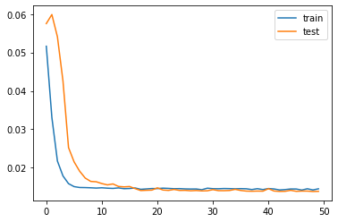

from math import sqrt
from numpy import concatenate
from matplotlib import pyplot
from pandas import read_csv
from pandas import DataFrame
from pandas import concat
from sklearn.preprocessing import MinMaxScaler
from sklearn.preprocessing import LabelEncoder
from sklearn.metrics import mean_squared_error
from tensorflow.keras.models import Sequential
from tensorflow.keras.layers import Dense
from tensorflow.keras.layers import LSTM
# convert series to supervised learning
def series_to_supervised(data, n_in=1, n_out=1, dropnan=True):
n_vars = 1 if type(data) is list else data.shape[1]
df = DataFrame(data)
cols, names = list(), list()
# input sequence (t-n, ... t-1)
for i in range(n_in, 0, -1):
cols.append(df.shift(i))
names += [('var%d(t-%d)' % (j+1, i)) for j in range(n_vars)]
# forecast sequence (t, t+1, ... t+n)
for i in range(0, n_out):
cols.append(df.shift(-i))
if i == 0:
names += [('var%d(t)' % (j+1)) for j in range(n_vars)]
else:
names += [('var%d(t+%d)' % (j+1, i)) for j in range(n_vars)]
# put it all together
agg = concat(cols, axis=1)
agg.columns = names
# drop rows with NaN values
if dropnan:
agg.dropna(inplace=True)
return agg
# load dataset
dataset = read_csv('./data/pollution.csv', header=0, index_col=0)
values = dataset.values
# integer encode direction
encoder = LabelEncoder()
values[:,4] = encoder.fit_transform(values[:,4])
# ensure all data is float
values = values.astype('float32')
# normalize features
scaler = MinMaxScaler(feature_range=(0, 1))
scaled = scaler.fit_transform(values)
# frame as supervised learning
reframed = series_to_supervised(scaled, 1, 1)
# drop columns we don't want to predict
reframed.drop(reframed.columns[[9,10,11,12,13,14,15]], axis=1, inplace=True)
print(reframed.head())
# split into train and test sets
values = reframed.values
n_train_hours = 365 * 24
train = values[:n_train_hours, :]
test = values[n_train_hours:, :]
# split into input and outputs
train_X, train_y = train[:, :-1], train[:, -1]
test_X, test_y = test[:, :-1], test[:, -1]
# reshape input to be 3D [samples, timesteps, features]
train_X = train_X.reshape((train_X.shape[0], 1, train_X.shape[1]))
test_X = test_X.reshape((test_X.shape[0], 1, test_X.shape[1]))
print(train_X.shape, train_y.shape, test_X.shape, test_y.shape)
# design network
model = Sequential()
model.add(LSTM(50, input_shape=(train_X.shape[1], train_X.shape[2])))
model.add(Dense(1))
model.compile(loss='mae', optimizer='adam')
# fit network
history = model.fit(train_X, train_y, epochs=50, batch_size=72, validation_data=(test_X, test_y), verbose=2, shuffle=False)
# plot history
pyplot.plot(history.history['loss'], label='train')
pyplot.plot(history.history['val_loss'], label='test')
pyplot.legend()
pyplot.show()
# make a prediction
yhat = model.predict(test_X)
test_X = test_X.reshape((test_X.shape[0], test_X.shape[2]))
# invert scaling for forecast
inv_yhat = concatenate((yhat, test_X[:, 1:]), axis=1)
inv_yhat = scaler.inverse_transform(inv_yhat)
inv_yhat = inv_yhat[:,0]
# invert scaling for actual
test_y = test_y.reshape((len(test_y), 1))
inv_y = concatenate((test_y, test_X[:, 1:]), axis=1)
inv_y = scaler.inverse_transform(inv_y)
inv_y = inv_y[:,0]
# calculate RMSE
rmse = sqrt(mean_squared_error(inv_y, inv_yhat))
print('Test RMSE: %.3f' % rmse) var1(t-1) var2(t-1) var3(t-1) var4(t-1) var5(t-1) var6(t-1) \
1 0.129779 0.352941 0.245902 0.527273 0.666667 0.002290
2 0.148893 0.367647 0.245902 0.527273 0.666667 0.003811
3 0.159960 0.426471 0.229508 0.545454 0.666667 0.005332
4 0.182093 0.485294 0.229508 0.563637 0.666667 0.008391
5 0.138833 0.485294 0.229508 0.563637 0.666667 0.009912
var7(t-1) var8(t-1) var1(t)
1 0.000000 0.0 0.148893
2 0.000000 0.0 0.159960
3 0.000000 0.0 0.182093
4 0.037037 0.0 0.138833
5 0.074074 0.0 0.109658
(8760, 1, 8) (8760,) (35039, 1, 8) (35039,)
Train on 8760 samples, validate on 35039 samples
Epoch 1/50
8760/8760 - 6s - loss: 0.0516 - val_loss: 0.0575
Epoch 2/50
8760/8760 - 2s - loss: 0.0331 - val_loss: 0.0599
Epoch 3/50
8760/8760 - 2s - loss: 0.0217 - val_loss: 0.0541
Epoch 4/50
8760/8760 - 2s - loss: 0.0179 - val_loss: 0.0426
Epoch 5/50
8760/8760 - 2s - loss: 0.0158 - val_loss: 0.0252
Epoch 6/50
8760/8760 - 2s - loss: 0.0151 - val_loss: 0.0215
Epoch 7/50
8760/8760 - 2s - loss: 0.0148 - val_loss: 0.0191
Epoch 8/50
8760/8760 - 2s - loss: 0.0148 - val_loss: 0.0173
Epoch 9/50
8760/8760 - 3s - loss: 0.0148 - val_loss: 0.0164
Epoch 10/50
8760/8760 - 3s - loss: 0.0147 - val_loss: 0.0163
Epoch 11/50
8760/8760 - 2s - loss: 0.0148 - val_loss: 0.0159
Epoch 12/50
8760/8760 - 2s - loss: 0.0147 - val_loss: 0.0155
Epoch 13/50
8760/8760 - 2s - loss: 0.0146 - val_loss: 0.0158
Epoch 14/50
8760/8760 - 3s - loss: 0.0147 - val_loss: 0.0151
Epoch 15/50
8760/8760 - 2s - loss: 0.0145 - val_loss: 0.0150
Epoch 16/50
8760/8760 - 3s - loss: 0.0146 - val_loss: 0.0151
Epoch 17/50
8760/8760 - 3s - loss: 0.0147 - val_loss: 0.0146
Epoch 18/50
8760/8760 - 3s - loss: 0.0144 - val_loss: 0.0141
Epoch 19/50
8760/8760 - 3s - loss: 0.0145 - val_loss: 0.0141
Epoch 20/50
8760/8760 - 3s - loss: 0.0146 - val_loss: 0.0142
Epoch 21/50
8760/8760 - 3s - loss: 0.0146 - val_loss: 0.0148
Epoch 22/50
8760/8760 - 3s - loss: 0.0147 - val_loss: 0.0142
Epoch 23/50
8760/8760 - 3s - loss: 0.0146 - val_loss: 0.0141
Epoch 24/50
8760/8760 - 3s - loss: 0.0145 - val_loss: 0.0143
Epoch 25/50
8760/8760 - 3s - loss: 0.0146 - val_loss: 0.0141
Epoch 26/50
8760/8760 - 3s - loss: 0.0145 - val_loss: 0.0141
Epoch 27/50
8760/8760 - 2s - loss: 0.0144 - val_loss: 0.0140
Epoch 28/50
8760/8760 - 2s - loss: 0.0145 - val_loss: 0.0141
Epoch 29/50
8760/8760 - 2s - loss: 0.0143 - val_loss: 0.0140
Epoch 30/50
8760/8760 - 2s - loss: 0.0147 - val_loss: 0.0140
Epoch 31/50
8760/8760 - 2s - loss: 0.0145 - val_loss: 0.0143
Epoch 32/50
8760/8760 - 2s - loss: 0.0145 - val_loss: 0.0140
Epoch 33/50
8760/8760 - 2s - loss: 0.0146 - val_loss: 0.0140
Epoch 34/50
8760/8760 - 2s - loss: 0.0146 - val_loss: 0.0141
Epoch 35/50
8760/8760 - 2s - loss: 0.0145 - val_loss: 0.0144
Epoch 36/50
8760/8760 - 3s - loss: 0.0146 - val_loss: 0.0141
Epoch 37/50
8760/8760 - 2s - loss: 0.0145 - val_loss: 0.0139
Epoch 38/50
8760/8760 - 2s - loss: 0.0143 - val_loss: 0.0139
Epoch 39/50
8760/8760 - 2s - loss: 0.0145 - val_loss: 0.0139
Epoch 40/50
8760/8760 - 2s - loss: 0.0143 - val_loss: 0.0139
Epoch 41/50
8760/8760 - 2s - loss: 0.0146 - val_loss: 0.0145
Epoch 42/50
8760/8760 - 2s - loss: 0.0145 - val_loss: 0.0139
Epoch 43/50
8760/8760 - 2s - loss: 0.0142 - val_loss: 0.0138
Epoch 44/50
8760/8760 - 2s - loss: 0.0143 - val_loss: 0.0139
Epoch 45/50
8760/8760 - 2s - loss: 0.0145 - val_loss: 0.0141
Epoch 46/50
8760/8760 - 2s - loss: 0.0145 - val_loss: 0.0139
Epoch 47/50
8760/8760 - 3s - loss: 0.0142 - val_loss: 0.0139
Epoch 48/50
8760/8760 - 3s - loss: 0.0145 - val_loss: 0.0139
Epoch 49/50
8760/8760 - 2s - loss: 0.0142 - val_loss: 0.0138
Epoch 50/50
8760/8760 - 2s - loss: 0.0145 - val_loss: 0.0139
Test RMSE: 26.682